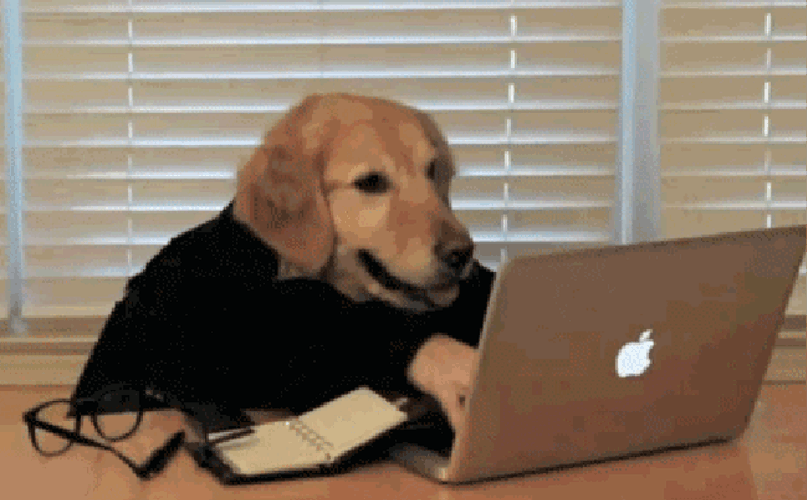

O nama

Lost&FounDog je jedini sajt na našim prostorima koji vam pomaže
u potrazi za vašim izgubljenim psom. Obezbedjujemo besplatan pristup
stalno ažuriranim informacijama kao i savete i podršku prilikom
potrage. Sajt je baziran na principu gde svako može da doda sliku
sa informacijama o izgubljenom odnosno pronadjenom psu, i tako
skraćujemo vreme provere postova i odobravanje istih za postavljanje,
a istovremeno ubrzavamo proces pretrage ljubimaca.
...
Pas će se automatski ubaciti u odeljak "Izgubljeni psi" ili
"Pronadjeni psi" u zavisnosti od toga koju ste opciju izabrali.
Obavezno proveravajte informacije na sajtu i obavestavajte o
napretku ( da li je pas ili vlasnik psa pronadjen da bismo post uklonili
sa sajta ). Takodje vam preporučujemo da ostvarite kontakt sa drugim
vlasnicima iste rase kao što je Vaš pas, radi lakše pretrage kao i radi
postavljanja flajera za nestalog psa, u različitim krajevima.
Uputstva za sajt:

Ako ste pronašli ili izgubili svog ljubimca, u odeljku
prijavi psa, unesite sve neophodne informacije u pronadjenom odnosno
izgubljenom psu, što više informacija i što je opis detaljniji veća je
verovatnoća da će se pas pronaći.
Sajt funkcioniše tako što svako ima pravo da objavi post te je smanjeno
vreme čekanja
izmedju slanja zahteva za post i postavljanja, jer je u ovakvim
situacijama svaki
minut bitan.
Svaka zloupotreba ovakvog načina funkcionisanja bice kažnjena zabranom
pristupa sajtu
od nedelju dana.